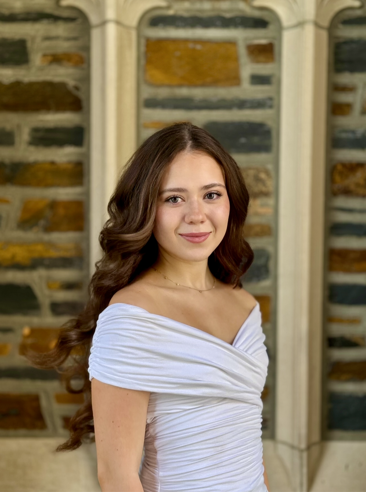

I am a Master of Science in Bioethics student at Harvard Medical School and a Neuroscience graduate from Duke University. My work bridges the gap between clinical innovation and ethical responsibility, with a specific focus on AI in healthcare and neurosurgery. Through research, clinical practice, and leadership, I aim to ensure that medical advancements serve patients equitably and compassionately.
Marharyta Krylova
(Preferred Name: Margarita Krylova)
MS in Bioethics Candidate at Harvard Medical School
Neuroscience Alumna at Duke University
Exploring the intersection of clinical practice, AI in medicine, and medical ethics.
Get in Touch

About Me
Education
Harvard Medical School
Expected May 2026
MS, Bioethics
Honors: Dean's Scholarship for HMS Master's Students
Duke University
Aug 2022 - May 2025
BS, Neuroscience
Minors in Chemistry & Russian
Honors: Graduation with Distinction in 3 years
Valencia College
Feb 2020 - May 2022
Associate of Arts Degree
Honors: President's List, Phi Theta Kappa Honor Society
Experience
Urgent Care Medical Assistant
Carbon Health | Jun 2025 – May 2026Managed full patient journeys for 15–30 patients per shift, balancing administrative intake with clinical procedures like phlebotomy and vitals. Developed clinical foresight to minimize patient discomfort and ensure every patient felt seen.
Clinical Technician II (Phlebotomist)
Duke University Hospital | Feb 2024 – Jul 2024Performed time-sensitive phlebotomy for medically complex patients on cardiac/transplant units during overnight shifts. Balanced clinical precision with empathy while navigating patient delirium and distress.
Physician Shadowing
Various Locations | Apr 2022 – Oct 2025Observed physicians across eight specialties, witnessing the delivery of difficult news and the importance of patient autonomy. Reflected on the necessity of seeing patients as people first, not just cases.
Research
AI Ethics and Health Informatics Researcher
UC Irvine Health | Jun 2024 – Present
Led a comparative effectiveness study of LLMs for patient education in spine surgery and investigated clinician attitudes toward AI adoption. Manuscript under review at Bulletin of the Hospital for Joint Diseases.
Patient Education and Advocacy Ethics Researcher
Harvard Medical School | Sep 2025 - Present
Designing an interactive Patient Decision Aid (PDA) to empower patients in making informed choices about AI involvement in their treatment. Adhering to IPADAS guidelines to ensure accessibility for diverse populations.
Neurosurgical Ethics Researcher
NEW Lab, MGH | Oct 2024 – Present
Examining how medical education prepares trainees to address healthcare inequities and leading a systematic review on the ethical implications of intraoperative AI.
Awards & Grants
Dean's Scholarship for HMS Master's Students
Jun 2025Grant Recipient
Selected as one of 35 students across all the HMS Master’s programs. Awarded to students that "exhibited academic excellence, persistence, resilience, and a commitment to serving under-resourced communities in their field of interest."
Duke URS DiSTEM Award
Nov 2024Grant Recipient
One of 16 students out of a large pool of applicants selected as a grant recipient. The grant covered all expenses associated with attending the ABRCMS conference.
Duke URS Conference Grant
Sept 2023, Jan 2024Grant Recipient
Received a $500 award on two separate occasions to support expenses for presenting neurosurgery research at conferences.
Skills & Languages
Tools & Technologies
Languages
Media Mentions
Student Spotlight: Margarita Krylova
Duke University Department of Psychology and Neuroscience | Jul 2024
Recognized for work in the Neuroscience department and dedication to exploring ethical issues in neurosurgery.
Read Article →URS Conference Stories: Margarita Krylova
Duke University Undergraduate Research Support | Jan 2025
Featured spotlight sharing experiences presenting research at the conference and discussing the passion for a career in neurosurgery.
Read Article →